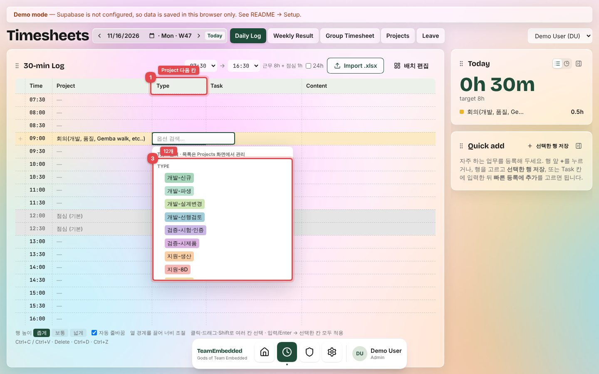
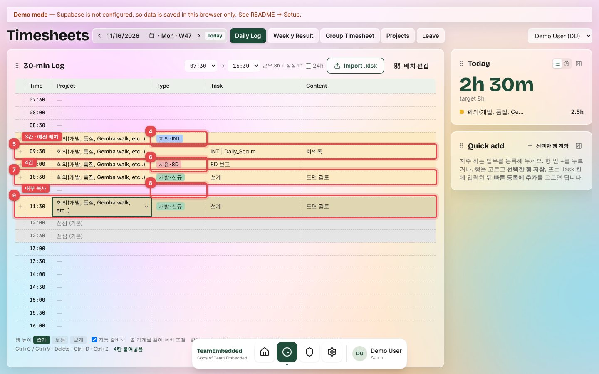
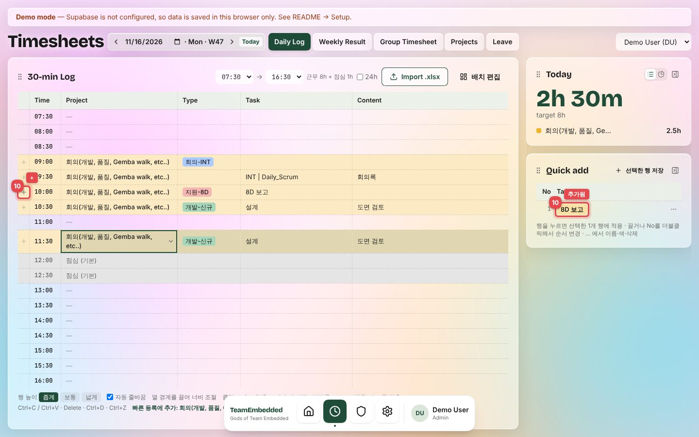
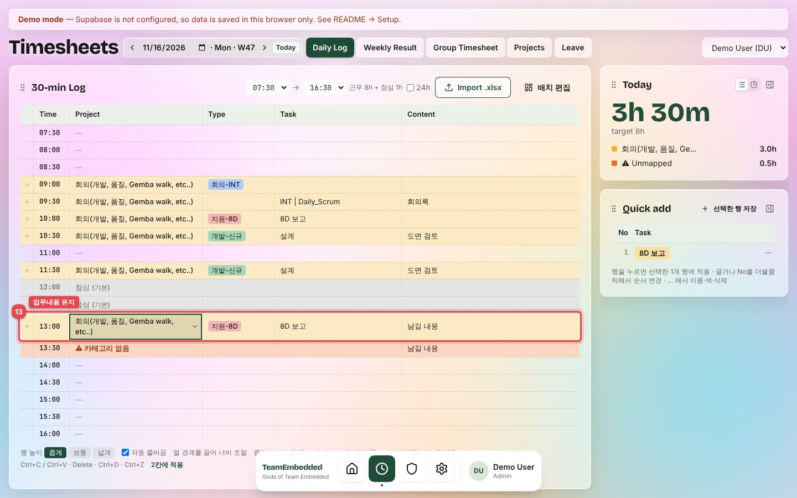
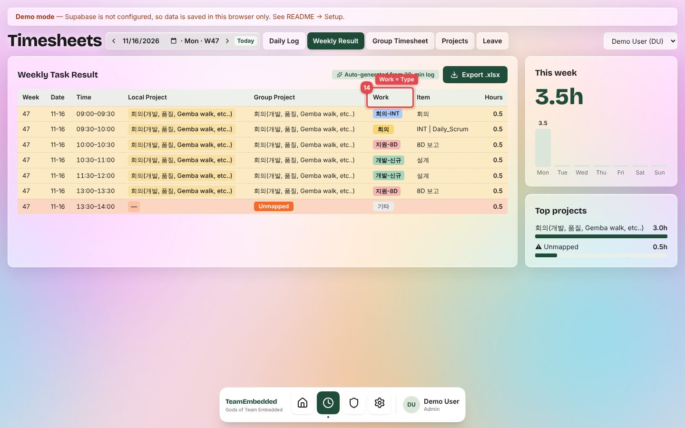
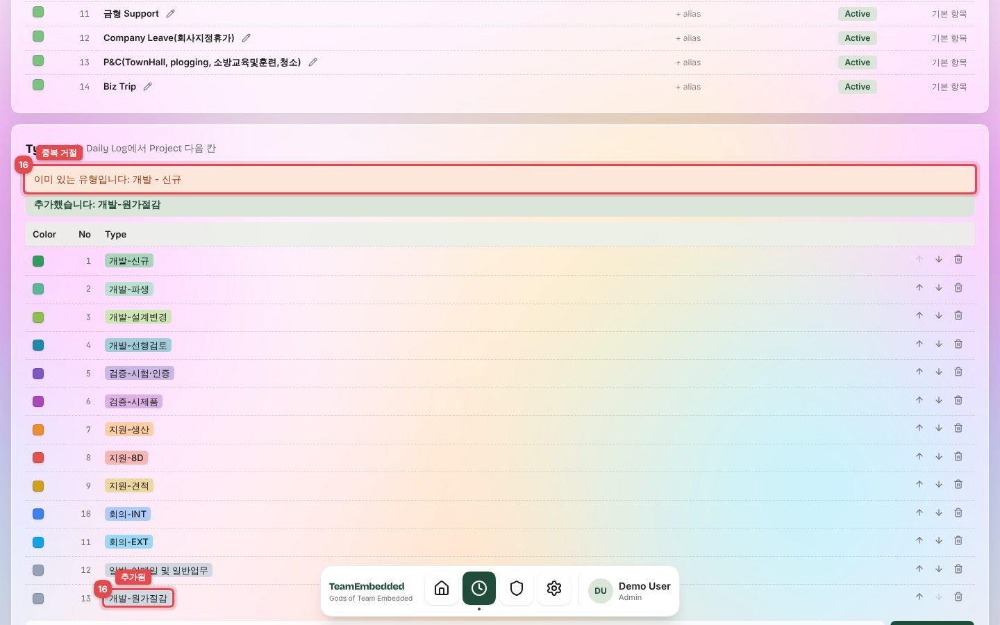
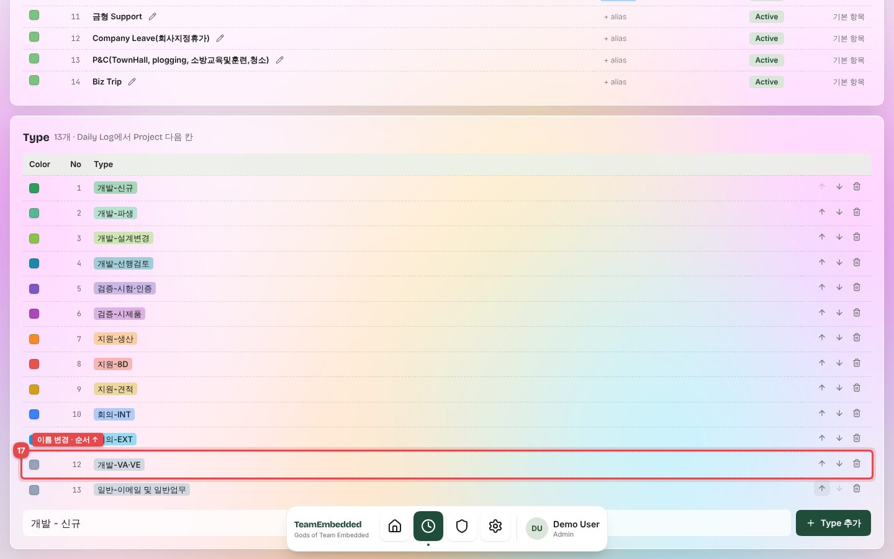
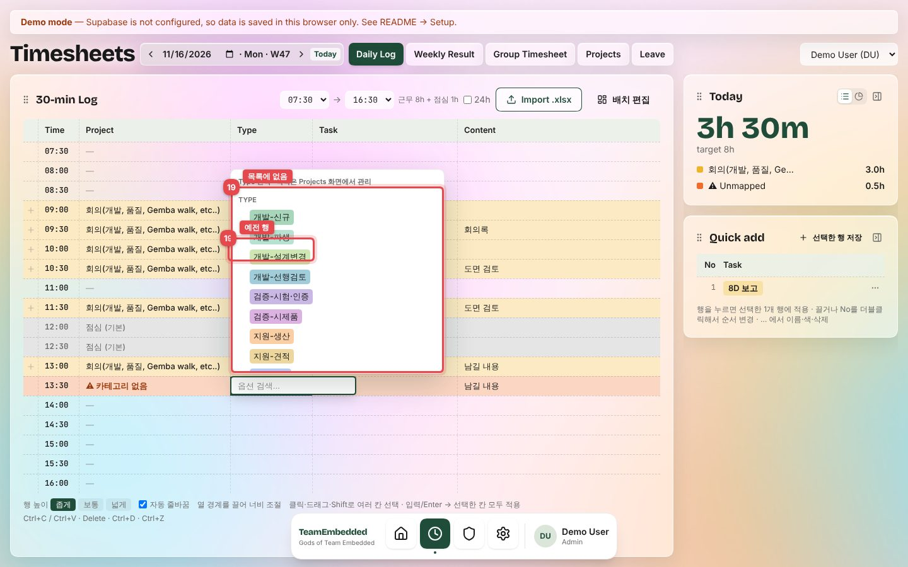
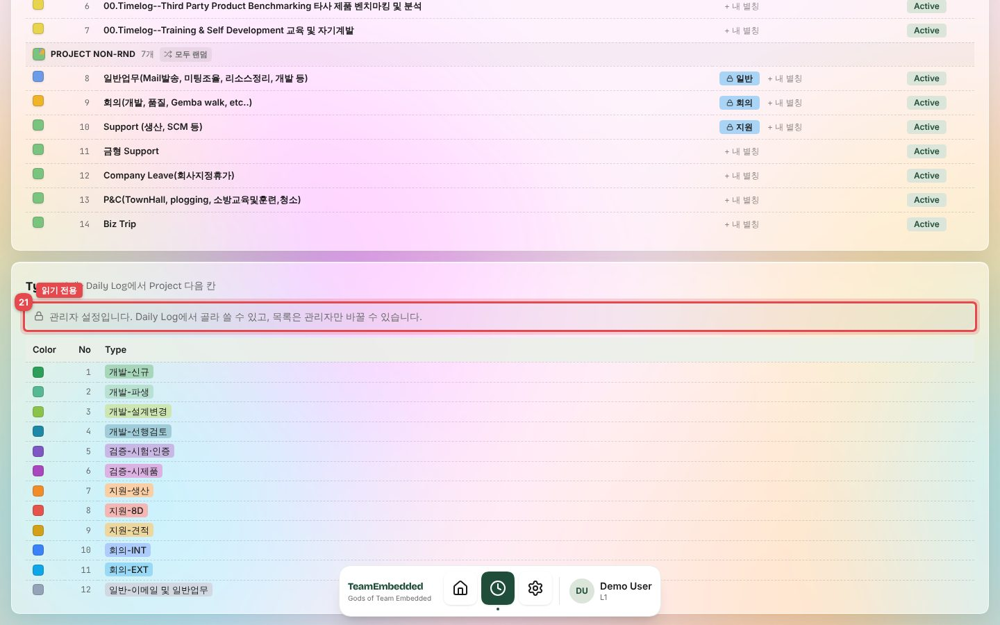
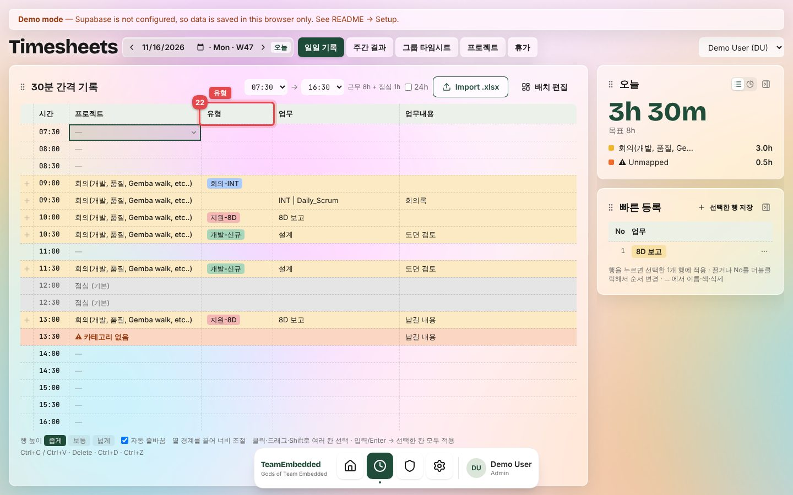

검증 보고서 · E2E
일의 종류를 나타내는 MID 카테고리를 대분류 다음 칸에 추가(선택 사항). 목록은 관리자가 관리하고, 엑셀 3칸 붙여넣기는 예전처럼, 반복 업무에 MID 포함, Weekly Result의 Work 열을 MID로. 시간 앞 + 버튼으로 그 행(업무내용 제외)을 반복 업무로 추가.
| # | 테스트 케이스 | 기대 결과 | 실제 결과 | 판정 근거 (Assertion) | 결과 | 증적 |
|---|---|---|---|---|---|---|
| 1 | Type 칸이 Project 바로 다음 | Time|Project|Type|Task|Content | Time|Project|Type|Task|Content | 머리글 텍스트 === 'Time|Project|Type|Task|Content' | PASS | 화면 1 |
| 2 | 1440px에서 표가 카드 안에 들어감(가로 스크롤 없음) | 표 너비 ≤ 카드 너비 | 1010px / 1010px | scrollWidth <= clientWidth + 1 | PASS | — |
| 3 | Type 드롭다운에 관리자 목록 12개가 순서대로 | 12개, 첫 항목 개발-신규, 마지막 일반-이메일 및 일반업무 | 12개, 개발-신규 … 일반-이메일 및 일반업무 | options.length === 12 && 첫 항목·마지막 항목 이름 비교 | PASS | 화면 1 |
| 4 | "int" 입력 + Enter로 회의-INT 선택 | 회의-INT | 회의-INT | 09:00 Type 칸 텍스트 === '회의-INT' | PASS | 화면 2 |
| 5 | 엑셀 3칸(Project·Task·업무내용)은 예전처럼 | Type 빈칸, Task 'INT | Daily_Scrum', 업무내용 '회의록' | Type '', Task 'INT | Daily_Scrum', 업무내용 '회의록' | mid === '' && task === 'INT | Daily_Scrum' && details === '회의록' | PASS | 화면 2 |
| 6 | 둘째 칸이 Type 이름인 3칸은 Type 포함 순서대로 | Type '지원-8D', Task '8D 보고' | Type '지원-8D', Task '8D 보고' | mid === '지원-8D' && task === '8D 보고' | PASS | 화면 2 |
| 7 | 4칸은 Project·Type·Task·업무내용 | Type '개발-신규', 업무내용 '도면 검토' | Type '개발-신규', 업무내용 '도면 검토' | mid === '개발-신규' && details === '도면 검토' | PASS | 화면 2 |
| 8 | 목록에 없는 이름은 무시 | Type 빈칸 | '' | 10:30 Type 칸 === '' | PASS | 화면 2 |
| 9 | Daily Log 안에서 복사·붙여넣기하면 Type까지 같은 칸으로 | 11:30 행 Type '개발-신규', 업무내용 '도면 검토' | Type '개발-신규', 업무내용 '도면 검토' | row23.mid === '개발-신규' && row23.details === '도면 검토' | PASS | 화면 2 |
| 10 | + 를 누르면 그 행이 반복 업무에 추가 | 반복 업무 표에 '8D 보고' | 1개 | 반복 업무 표 안 '8D 보고' 수 === 1 | PASS | 화면 3 |
| 11 | + 를 다시 눌러도 중복 없음 | 칩 1개, '이미 빠른 등록에 있습니다' 안내 | 칩 1개, 안내 표시 | chip count === 1 | PASS | — |
| 12 | 빈 행에는 + 가 없음 | 0개 | 0개 | 06:00 행 + 버튼 수 === 0 | PASS | — |
| 13 | 반복 업무 적용: Project·Type·Task는 채우고 업무내용은 그대로 | Type '지원-8D', Task '8D 보고', 업무내용 '남길 내용' | Type '지원-8D', Task '8D 보고', 업무내용 '남길 내용' | mid === '지원-8D' && task === '8D 보고' && details === '남길 내용' | PASS | 화면 4 |
| 14 | Weekly Result의 Work 열: Type, 없으면 회의 | 회의-INT, 지원-8D, 개발-신규, 회의 포함 | 회의-INT, 회의, 지원-8D, 개발-신규, 개발-신규, 지원-8D, 기타 | work 에 '회의-INT','지원-8D','개발-신규','회의' 모두 포함 | PASS | 화면 5 |
| 15 | Type Work 값은 색 칩 | 3개 이상 | 5개 | [data-testid=work-mid] 수 >= 3 | PASS | — |
| 16 | 관리자 Type 추가, 같은 이름(띄어쓰기만 다름)은 거절 | 추가됨 / '이미 있는 유형입니다' | 추가됨 / 거절 안내 표시 | 목록에 '개발-원가절감' 있음 && 오류 문구 표시 | PASS | 화면 6 |
| 17 | 이름 더블클릭 수정, ↑ 로 순서 변경 | 12번째 '개발-VA·VE', 13번째 '일반-이메일 및 일반업무' | 12번째 '개발-VA·VE', 13번째 '일반-이메일 및 일반업무' | names[11] === '개발-VA·VE' && names[12] === '일반-이메일 및 일반업무' | PASS | 화면 7 |
| 18 | 안 쓰인 Type는 삭제, 쓰인 Type는 숨김 | '삭제했습니다' / '숨겼습니다' | 두 안내 모두 표시 | 삭제·숨김 안내 문구 확인 | PASS | — |
| 19 | 숨긴 Type는 예전 행에 그대로 보이고 드롭다운에서는 빠짐 | 10:00 행 지원-8D 유지, 드롭다운에 없음 | 행 유지, 드롭다운 없음 | !options.includes('지원-8D') | PASS | 화면 8 |
| 20 | 숨긴 Type 되돌리기 | '되돌렸습니다: 지원-8D' | 안내 표시 | 되돌리기 안내 문구 확인 | PASS | — |
| 21 | L1은 Type 목록을 읽기만 | 추가 칸·삭제 버튼 없음, 관리자 설정 안내 | 추가 칸 0개, 삭제 버튼 0개 | add === 0 && remove === 0 | PASS | 화면 9 |
| 22 | 한국어 화면 머리글 | 시간|프로젝트|유형|업무|업무내용 | 시간|프로젝트|유형|업무|업무내용 | 머리글 === '시간|프로젝트|유형|업무|업무내용' | PASS | 화면 10 |
| 23 | 페이지 오류 없음 | 0건 | 0건 | pageerror 수 === 0 | PASS | — |
빨간 테두리와 번호는 표의 테스트 케이스 번호입니다. 그 요소를 확인해 판정했습니다.









